Recent advances in 3D Gaussian Splatting have enabled impressive photorealistic novel view synthesis. However, to transition from a pure rendering engine to a reliable spatial map for autonomous agents and safety-critical applications, knowing where the representation is uncertain is as important as the rendering fidelity itself.
We bridge this critical gap by introducing a lightweight, plug-and-play framework for pixel-wise, view-dependent predictive uncertainty estimation. Our post-hoc method formulates uncertainty as a Bayesian-regularized linear least-squares optimization over reconstruction residuals. This architecture-agnostic approach extracts a per-primitive uncertainty channel without modifying the underlying scene representation or degrading baseline visual fidelity.
Crucially, we demonstrate that providing this actionable reliability signal successfully translates 3D Gaussian Splatting into a trustworthy spatial map, further improving state-of-the-art performance across three critical downstream perception tasks: active view selection, pose-agnostic scene change detection, and pose-agnostic anomaly detection.
Architecture-agnostic — integrates with any 3DGS variant without modifying the base model or its training pipeline.
Only ~13% additional training time versus vanilla 3DGS, far less than competing approaches that require >100% overhead.
3× higher Pearson correlation and <½ the AUSE (DSSIM) compared to the best existing method on Mip-NeRF360.
Consistent improvements across active view selection, scene change detection, and anomaly detection.
Our approach learns a per-primitive, view-dependent uncertainty channel directly from training-view reconstruction residuals via a lightweight linear least-squares formulation.
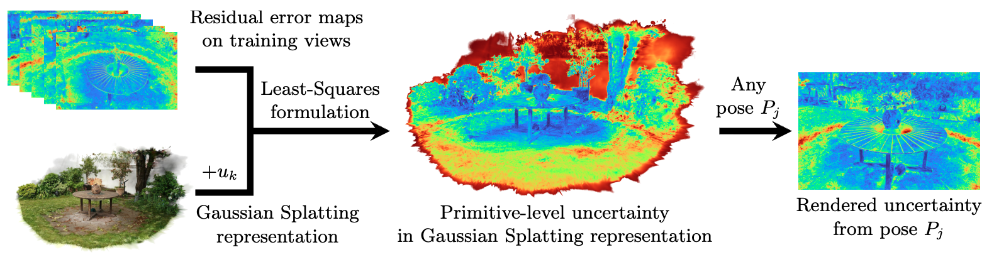
A standard 3DGS model is trained to completion. Our method requires no changes to this step.
Per-pixel reconstruction residuals $L_x = (1-\lambda)L^1_x + \lambda L^{\text{DSSIM}}_x$ are computed on all training views.
A per-primitive uncertainty channel $u_k$ is learned by minimizing $\| y - Au \|_2^2$ with Bayesian $L^2$ regularization.
Uncertainty maps are rendered for any novel viewpoint: $U(x) = \sum_k u_k(d)\,\alpha_k(x)\,T_k(x)$.
In sparse-view settings, 3DGS can overfit training views, yielding near-zero residuals even in poorly reconstructed regions. We address this by introducing an $L^2$ regularization term that acts as a Gaussian prior — pulling unobserved primitive uncertainties toward a maximal uncertainty level $b$:
This is equivalent to Bayesian inference with a Gaussian prior centered at maximal uncertainty, ensuring reliable predictions even for highly novel viewpoints.
Our uncertainty maps closely follow the true per-pixel rendering error, outperforming all baselines across Mip-NeRF360, Tanks & Temples, and Deep Blending datasets.
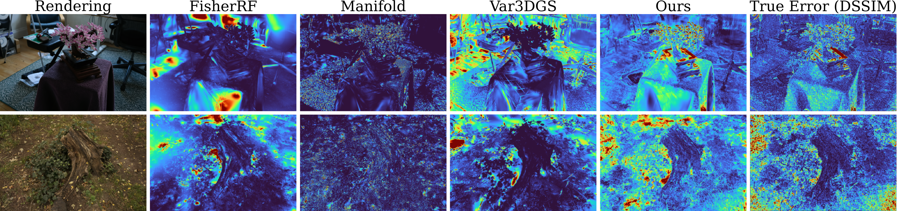
We consistently outperform all baselines across all metrics and datasets with significantly lower computational overhead.
| Method | Mip-NeRF360 | Tanks & Temples | Deep Blending | ||||||||||||
|---|---|---|---|---|---|---|---|---|---|---|---|---|---|---|---|
| AUSE ↓ | Pearson ↑ | OH ↓ (%) | AUSE ↓ | Pearson ↑ | OH ↓ (%) | AUSE ↓ | Pearson ↑ | OH ↓ (%) | |||||||
| L¹ | DSSIM | L¹ | DSSIM | L¹ | DSSIM | L¹ | DSSIM | L¹ | DSSIM | L¹ | DSSIM | ||||
| FisherRF | 0.708 | 0.606 | -0.055 | 0.009 | 14.2 | 0.691 | 0.709 | -0.087 | -0.145 | 19.3 | 0.751 | 0.853 | -0.116 | -0.190 | 19.7 |
| Manifold | 0.520 | 0.559 | 0.070 | -0.005 | 30.2 | 0.574 | 0.654 | 0.053 | 0.008 | 23.6 | 0.503 | 0.548 | 0.095 | 0.074 | 48.1 |
| Var3DGS | 0.558 | 0.495 | 0.118 | 0.160 | >100 | 0.539 | 0.567 | 0.161 | 0.176 | >100 | 0.588 | 0.671 | 0.106 | 0.006 | >100 |
| Ours | 0.328 | 0.214 | 0.369 | 0.547 | 12.8 | 0.299 | 0.233 | 0.427 | 0.571 | 14.0 | 0.376 | 0.356 | 0.243 | 0.244 | 13.0 |
OH = training overhead as percentage of 3DGS training time. Our method achieves >3× higher Pearson correlation and <½ AUSE (DSSIM) compared to the best baseline (Var3DGS) on Mip-NeRF360, while maintaining the lowest overhead.
Our Bayesian-inspired regularization ensures reliable uncertainty estimates even when the base 3DGS model is trained on only 4 sparse views, outperforming FisherRF consistently across all regularization weights.
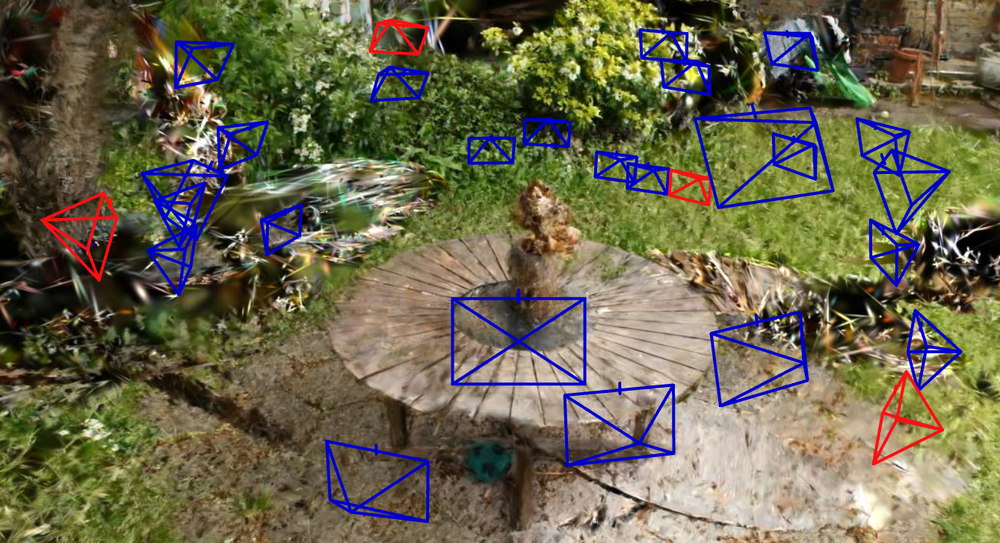
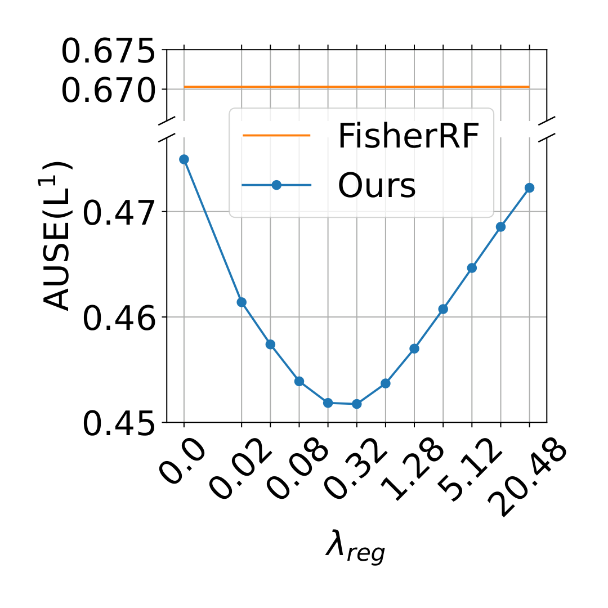
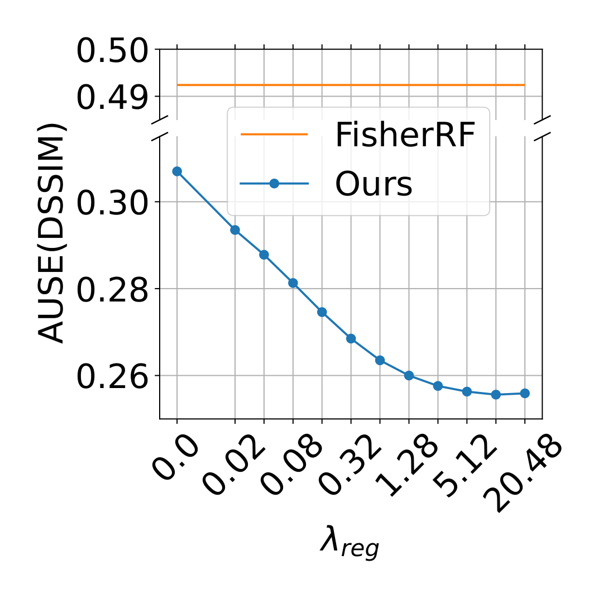
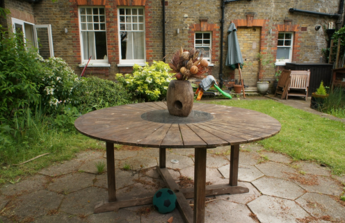
Ground Truth
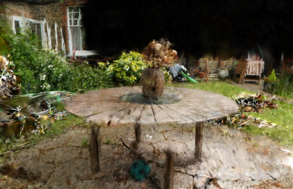
3DGS Render
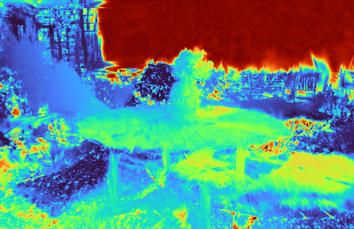
$\lambda_{\text{reg}}=0$
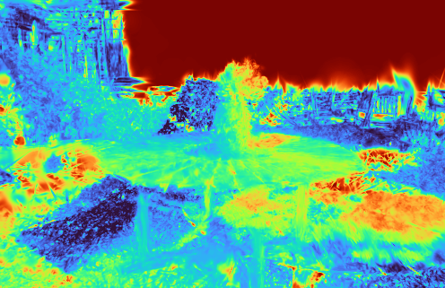
$\lambda_{\text{reg}}=0.32$
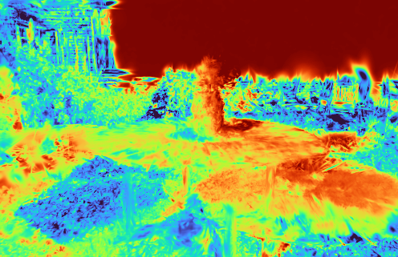
$\lambda_{\text{reg}}=10.24$
Without regularization ($\lambda_{\text{reg}}=0$), the model predicts near-zero uncertainty even for poorly reconstructed regions. Bayesian regularization correctly highlights uncertain areas.
We use our predicted uncertainty maps to guide next-best-view selection, selecting the candidate view with the highest total predicted uncertainty. Our approach consistently outperforms state-of-the-art baselines on Mip-NeRF360.
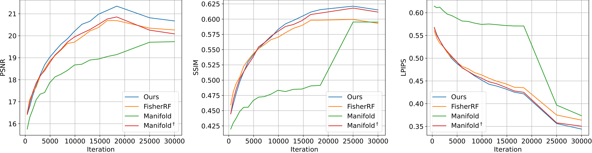
| Method | PSNR ↑ | SSIM ↑ | LPIPS ↓ |
|---|---|---|---|
| FisherRF | 20.266 | 0.593 | 0.363 |
| Manifold | 19.732 | 0.595 | 0.373 |
| Manifold† | 20.088 | 0.611 | 0.350 |
| Ours | 20.676 | 0.615 | 0.344 |
Active View Selection on Mip-NeRF360 (20 selected views). † denotes using Manifold's predicted view order to guide vanilla 3DGS training.
Rendering artifacts in 3DGS-based scene change detection cause false positives. We suppress these by attenuating the change map with our predicted uncertainty: $\tilde{M}^k = M^k \odot (1 - M^k_{\text{unc}})$.

| Metric | Feature Diff. | MV3DCD-ZS | MV3DCD | Online-SCD | ||||||||
|---|---|---|---|---|---|---|---|---|---|---|---|---|
| Base | + Ours | Δ% | Base | + Ours | Δ% | Base | + Ours | Δ% | Base | + Ours | Δ% | |
| mIoU ↑ | 0.278 | 0.359 | +29.1% | 0.382 | 0.439 | +14.9% | 0.470 | 0.498 | +6.0% | 0.486 | 0.498 | +2.5% |
| F1 ↑ | 0.402 | 0.502 | +24.9% | 0.526 | 0.593 | +12.7% | 0.621 | 0.649 | +4.5% | 0.638 | 0.651 | +2.1% |
Results on the PASLCD benchmark. Our uncertainty guidance consistently improves all baselines.
We apply the same uncertainty-guided attenuation to pose-agnostic anomaly detection: $\tilde{S}^k = S^k \odot (1 - M^k_{\text{unc}})$. This suppresses false anomaly activations in regions where the 3DGS reference model lacks confidence.
| Metric | SplatPose | SplatPose+ | ||||
|---|---|---|---|---|---|---|
| Base | + Ours | Δ% | Base | + Ours | Δ% | |
| AUROC ↑ | 0.929 | 0.939 | +1.1% | 0.940 | 0.956 | +1.7% |
| AUPRO ↑ | 0.700 | 0.765 | +9.3% | 0.761 | 0.798 | +4.9% |
Results on MAD-Real benchmark. With our UE, SplatPose matches or surpasses its successor SplatPose+, and our method advances the current state-of-the-art when applied to SplatPose+.
@inproceedings{u3dgs2026,
title = {Predictive Photometric Uncertainty in {G}aussian
{S}platting for Novel View Synthesis},
author = {Galappaththige, Chamuditha Jayanga and Gottwald, Thomas and
Stehr, Peter and Heinert, Edgar and Suenderhauf, Niko and
Miller, Dimity and Rottmann, Matthias},
booktitle = {arXiv Preprint},
year = {2026},
}